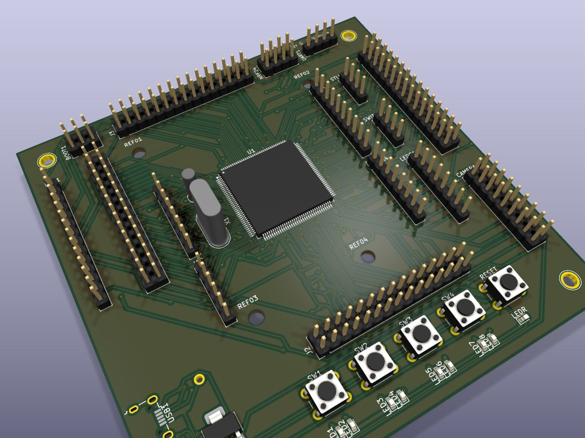
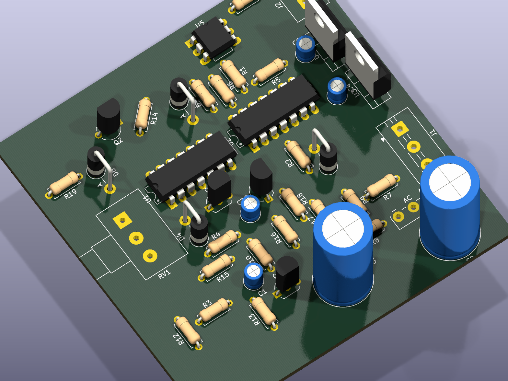
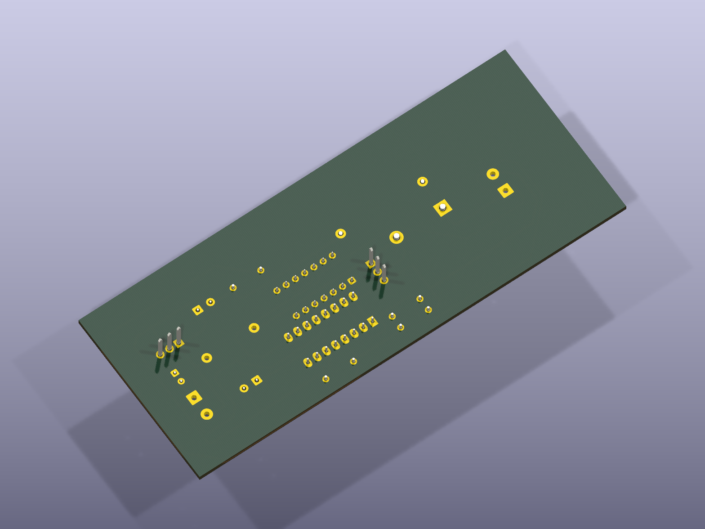
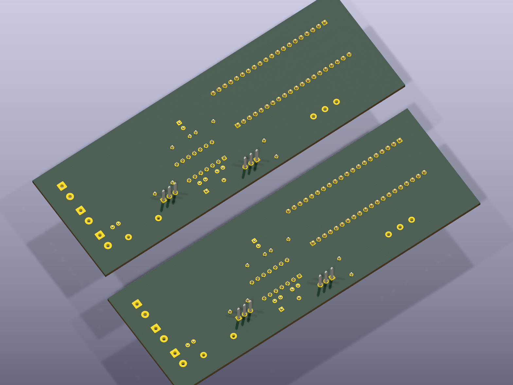
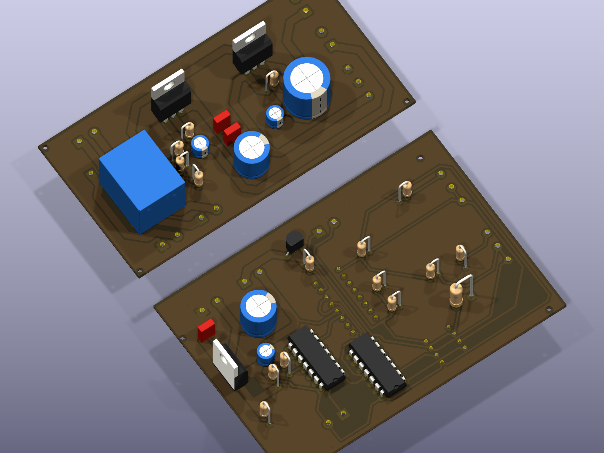
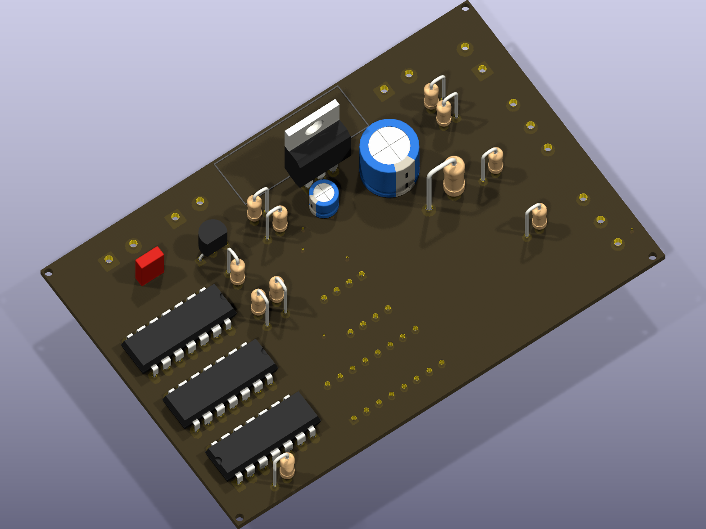
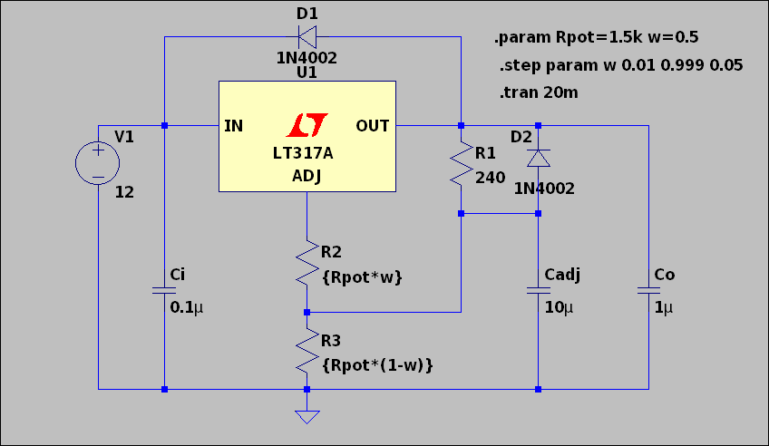
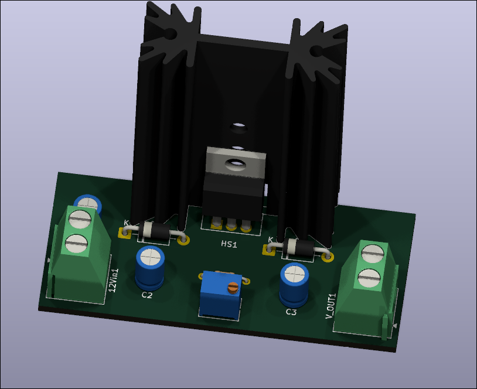
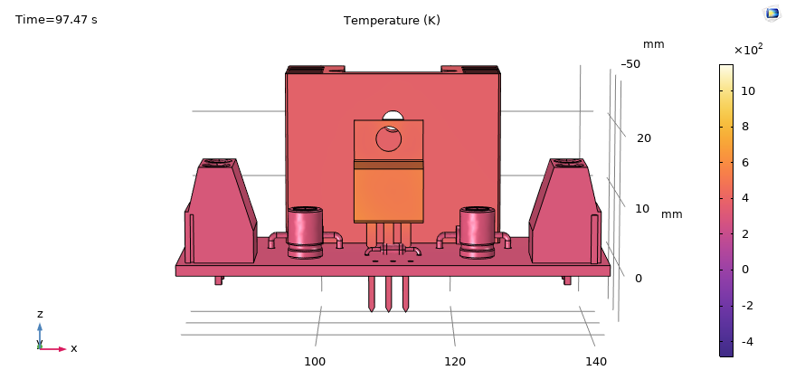
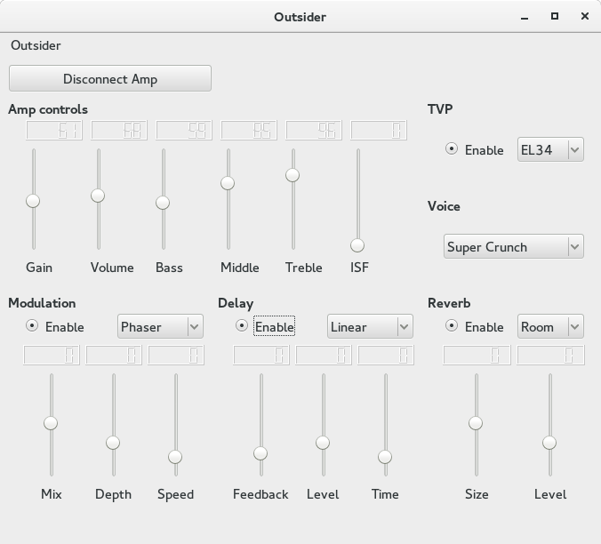

Electronics engineering student (7th semester, UAA) building toward complete hardware systems — not isolated pieces. Experience spans RTL design (RISC-V CPU components, IEEE-754 arithmetic units), PCB design in KiCad, and real-time embedded applications on STM32, including a production-deployed hardware/firmware/software system. Strong background in debugging at both hardware and software levels using waveform analysis and low-level tools. Focused on platform and system hardware roles — owning the full stack: firmware, power, and software working together.









